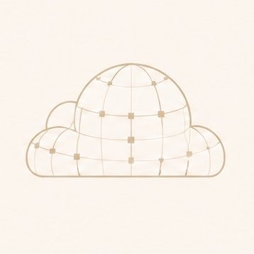

TDCC / RESEARCH DROP
OCT 12 · 2026 · PAPER + OPEN SOURCE
● Live
· A new quantization algorithm
CASK-Q.
Less error. Same bits.
One
$COMPUTE
.
JOINT Q/K QUANTIZATION
−25.2%
2-BIT
Attention-output error
vs independent Q/K reconstruction
−28.1%
3-BIT
Attention-output error
vs independent Q/K reconstruction
60/60
SEEDS
Paired wins
30/30 at 2-bit, 30/30 at 3-bit
12.6×
N=4096
Faster calibration loss
than dense logits at long context
decentralizedcompute.company/cask-q
We don't just talk. We compute. →